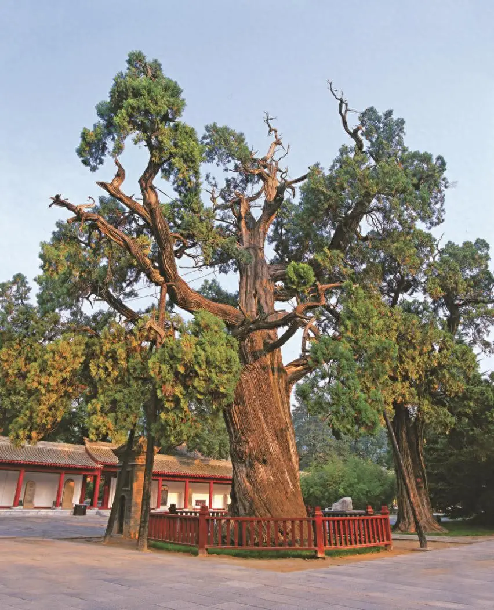
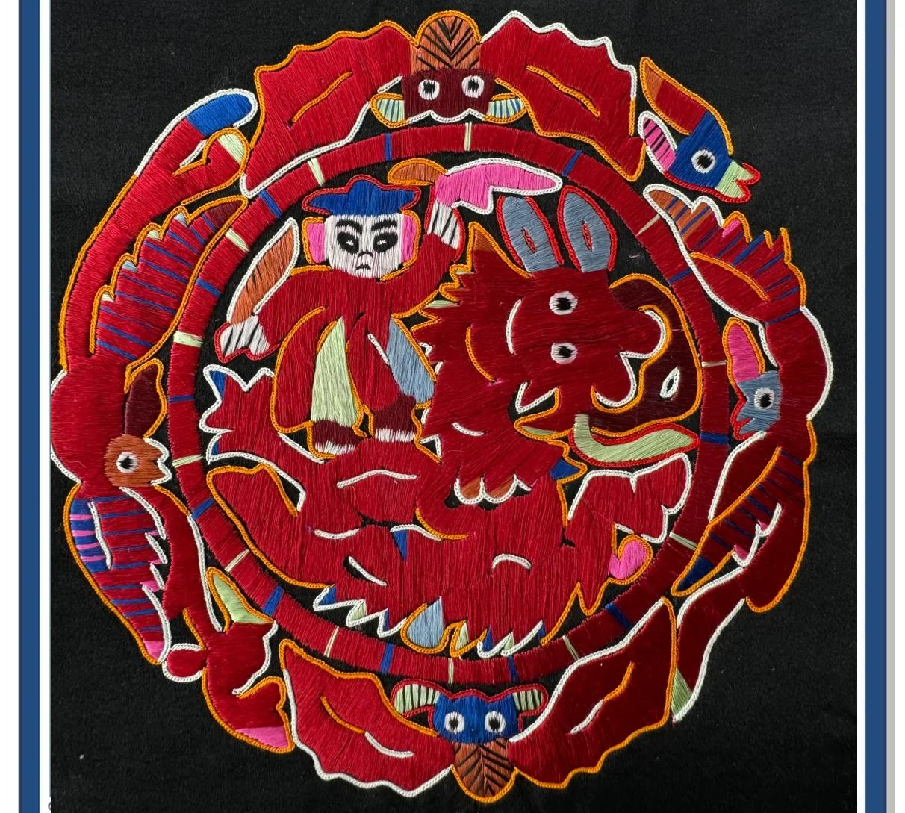

黔东南苗族古歌中的始祖传说
在
黔东南苗族流传的《苗族古歌》中，世界之初有一棵巨大的枫木树。枫木树心孕育了一只美丽的蝴蝶，名为“妹榜妹留”（Mief Bang Mief Lief）。
她与水泡恋爱，产下了十二个蛋。经过神鸟鹡宇鸟长达十二年的孵化，诞生了人类始祖姜央、雷公、龙、虎等十二兄弟。因此，蝴蝶被视为苗族人的共同祖先。

以针为笔，将神话穿在身上
最常见的构图，两只蝴蝶翅膀相对，象征阴阳调和与夫妻和睦。常用于背儿带和围腰。
蝴蝶栖息于盛开的牡丹之上，寓意“富贵长寿”。色彩多用丝线渐变，极具立体感。
直接描绘蝴蝶产卵或孵化场景，表达了苗族人民对多子多福、族群兴旺的朴素愿望。
苗绣中的蝴蝶纹样之所以栩栩如生，离不开独特的“破线绣”工艺。
绣娘会将一根普通的丝线劈成八分之一甚至更细，再在土布上进行平绣。这种技法使得绣面平整如纸，光泽如绸，蝴蝶的翅膀仿佛真的在颤动。
每一只蝴蝶的诞生，都需要绣娘耗费数月甚至数年的时间。这不仅是技艺的展示，更是一场关于信仰的修行。
